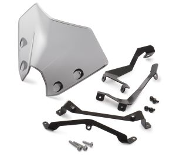
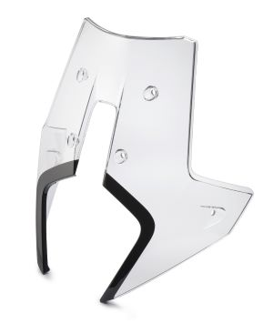
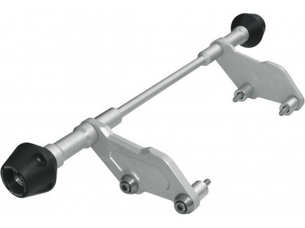
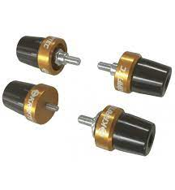
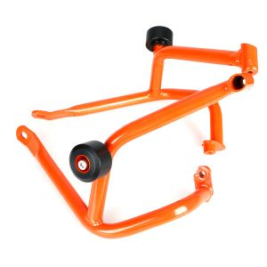
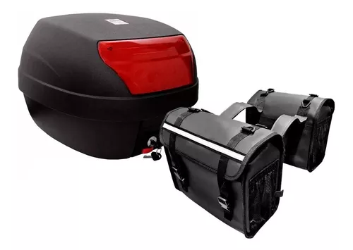

ACCESORIOS DISPONIBLES PARA TU MOTO
Cupula
Disponible para: Calle/Turismo
La cupula/parabrisas es un accesorio util para el rompimiento del viento en la cara a la hora de hacer viajes largos en tu KTM


Sliders Protectores
Disponible para: Calle/Turismo
Los Sliders son protecciones que ayudaran a mantener segura tu moto de caidas en seco o derrapes en movimiento



Porta Equipaje y Alforjas
Disponible para: Calle/Turismo
El porta equipaje junto con las alforjas son una buena manera de agregar equipaje para llevar en un viaje cuando tu mochila no de a basto
